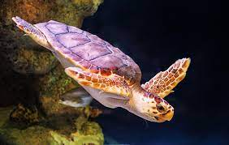

Loggerhead Sea Turtle
Population
They are found in south & south-east shore of Sri Lanka including Kosgoda & Rakawa. But they are also seen very rarely in Sri Lanka. This turtle is found in nearly all the world's temperate and tropical oceans: the Atlantic Ocean from Newfoundland to Argentina, the Indian Ocean from southern Africa to the Arabian Gulf to Western Australia, the Mediterranean Sea, and the Pacific Ocean from Alaska to Chile and Australia to Japan. During winter months loggerhead sea turtles migrate to tropical and subtropical waters
Breeding
Females produce estrogen and small amounts of testosterone, but externally just grow larger. Age at maturity is variable. Mature size is attained between age 10 and 30; captives are predicted to mature in 16 to 17 years. Reproductive life span, after reaching maturity is estimated at about 32 years. These sea turtles breed, on average, every 12 to 17 days during the breeding season. Females will not breed again for another 2 to 4, but possibly up to 9 years. Breeding may occur year-round, but it peaks between May and July. Just before the nesting season, male loggerhead sea turtles migrate to mating grounds, mostly located offshore from nesting beaches. They wait for females to begin courtship and mating. A male will circle a female, then approach her and bite her neck or shoulder. He will then attempt to mount her and, if she accepts him, they will mate. If a female does not accept the male she covers her cloaca and swims to the bottom, but a persistent male may wait until she needs air and make another attempt. Males use the long, curved claws on their forelimbs to hold on because mating may last for hours and other males often ram and bite the mating male, attempting to dislodge him. If a male is dislodged, another may quickly replace him. During the nesting season a female may lay several clutches, and will re-mate each time. In some cases, she may mate several times between clutches and so a single clutch may have sperm contributed by several males. Unlike most of other sea turtles, these turtles courtship and mating usually do not take place near the nesting beach, but rather along the migration routes between feeding and breeding grounds. The average interval between nesting seasons is two to three years. The gestation period of a female is 46 to 80 days. Females return to lay their eggs on or near the same beach where they hatched. The umber of offspring produced are 23 to 198; avg. 120. The size of an egg is 34.7-55.2mm. The speed of embryonic development within the egg depends on the temperature within the nest. This temperature can be affected by sun, shade, rain, heat generated within the nest, and an egg's position in the nest. At cool temperatures, around 25 ºC, development to hatching can take 65 to 70 days, but at warmer temperatures, around 35 ºC, development usually takes around 45 days. Like many turtles, they have temperature-dependent sex determination (TSD). The sex of hatchlings is determined by egg temperature during the middle third of incubation. The pivotal temperature - the temperature at which a 50:50 ratio of males: females is produced - varies from location to location around the world. Generally, the pivotal temperature is between 28 and 30 ºC. Temperatures of 24 to 26 ºC tend to produce all males and temperatures of 32 to 34 ºC tend to produce all females. Eggs are not viable outside the extremes of these ranges. The hatchlings emerge usually at night when protection from predation is greater. Typically those that lacked the strength to hatch and climb to the surface by that point would have died otherwise. They follow the brightest light to the ocean's edge. Once in the ocean they use ocean currents to travel to the Sargasso Sea using the Sargassum as protection until they mature. Hatchlings require the travel from their nest to the ocean in order to build up strength for the journey ahead.